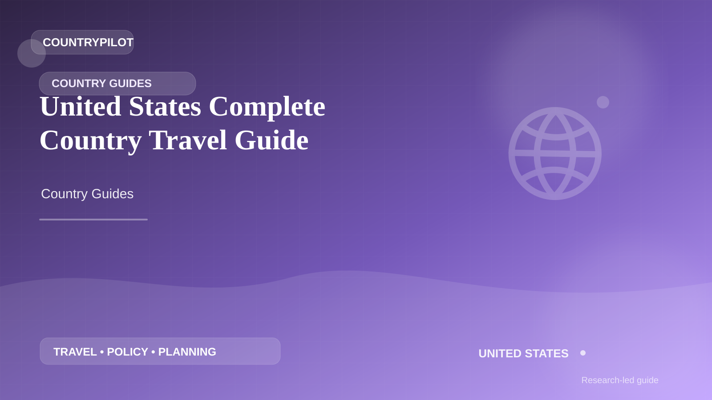
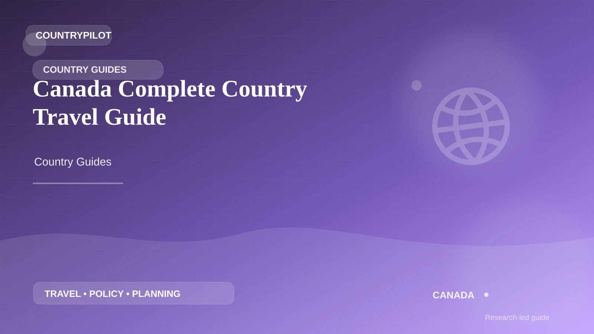
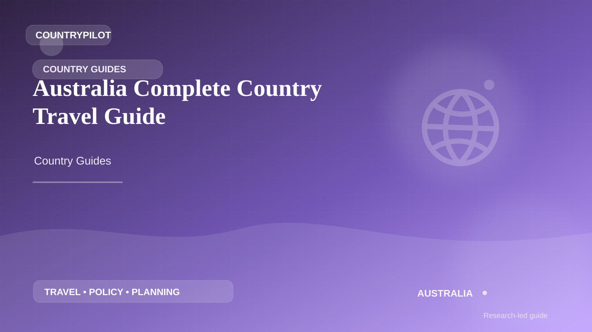
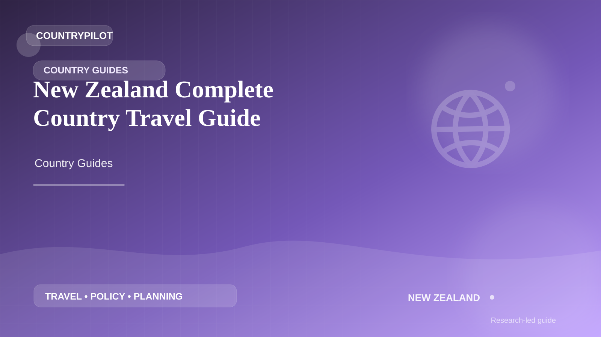

Canada · Sponsorship Jobs
Canada LMIA Jobs Guide
Understand LMIA-backed hiring, use official Job Bank routes and verify an employer before relying on a Canadian job offer.
 CountryPilot
CountryPilotCountry guides, visa rules, study abroad, work opportunities, relocation tips, safety, insurance and more — for all 195 countries.
Understand LMIA-backed hiring, use official Job Bank routes and verify an employer before relying on a Canadian job offer.
Plan the Skilled Worker route around sponsorship, eligibility, salary requirements and official verification.
Research employer-sponsored pathways, job-offer checks and the official sources to verify before making a move.
Use a verification-first approach to employer sponsorship, work-visa pathways and job opportunities in the United States.
Move from general research into Canada-specific visa, study, work, money and relocation guidance.
Explore Australia visa, skilled migration, study, jobs and relocation guidance from one destination hub.
Housing search, renting and scam-prevention guidance
02Accounts, payments and practical banking decisions
03Remote-work visa routes and destination planning
04Funding, repayment and education-finance planning
05Language and admissions test preparation
06Legal-process explainers and professional-help planning
07Fees, exchange rates and cross-border transfer planning
08Coverage, costs and student insurance decisions

United StatesStudy, work, relocation and immigration guides

CanadaVisas, study, work and settlement guides
Visas, study, work and relocation guides

AustraliaStudy, skilled work and migration guides
Work, study, visas and relocation guides
Study, work and immigration guides
Work, study and expat relocation guides
Work, study and relocation guides
Jobs, residence and expat guides

New ZealandStudy, work and migration guides
High-intent planning for study, work and relocation.
Student visa guide →Visa sponsorship jobs →Student health insurance →Skilled Worker, sponsorship, banking and student planning.
Skilled Worker visa →Verify a sponsor →Newcomer bank account →Work permits, employer sponsorship and study finance.
Work visa guide →Employer sponsorship →Tuition financing →Sponsorship jobs, scholarships and student money planning.
IT sponsorship jobs →Scholarship eligibility →Student money transfers →Extension eligibility, employer/job changes and current cost planning.
Official Job Bank search and employer verification.
482, 186 and 494 sponsorship pathways.
Current official university scholarship pathways.